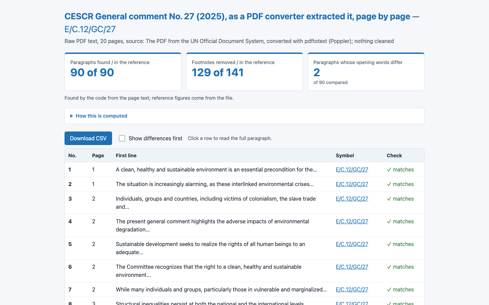

0/6 · 3.3 s · $0.000 · 0 lines
no_console_errors, no_network, uses_workshop_data, table_min_rows, text_contains, download

6/6 · 112.7 s · $0.202 · 284 lines
all checks passed
Run 2026-11-02T12-57-10-reasoning-high. Country: Kenya. Click a screenshot to open the app.
| Mistral Large 4 · France · Mistral (EU) | Claude Sonnet 5.5 · USA · Amazon Bedrock | |
|---|---|---|
| s7-4-extract | 0/6 · 3.3 s · $0.000 · 0 lines no_console_errors, no_network, uses_workshop_data, table_min_rows, text_contains, download |  6/6 · 112.7 s · $0.202 · 284 lines all checks passed |